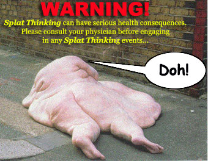

GENIUS ARTICLES HOME -
IQ TESTS - CREATIVITY - GENIUS - BRAIN STORMING - BLOG
Splat Thinking: How To Leap Into The Unknown And Always Land On Your Feet
Why the splat thinking technique encourages you to freefall from 30,000 feet with no
parachute and how that forces your brain into some serious creative thinking!

Splat Thinking is a term I've coined to describe forcing yourself to think on your
toes. You could also call it freefall thinking, danger thinking, adrenaline thinking, or
'uh-oh-what-color-are-my-underpants' thinking. Basically it's thinking under stress. And the stress you use is
embarassment, mortification or getting busted!
Most of the time we do whatever we can to avoid trouble. We grow a reluctance to be exposed, stretched or
forced into physical or mental activity that is outside of our comfort zone. Splat thinking seeks to break
that pattern. Splat thinking forces you into situations where you either think fast, and think smart, or
die on your feet.


In a hole? Take on a role!
When I was 15 I was on a train travelling back from a day trip to London to my home in the South of England. The
ticket collector didn't appear until my journey was almost over but when I showed him my ticket there was something
wrong with it -- maybe I hadn't paid enough or my rail card had expired or something like that. The ticket
collector wanted me to pay more, which I took exception to. I knew I was almost at my station and just had to
stall him. I also knew I could get in trouble. And that's when I briefly became "Hans Rumminegger", a young German
tourist who spoke no English at all. Now, I don't know a word of German, but luckily neither did the ticket
collector. So as I babbled to him in a German accent with made-up German words he took me at face value and was
sufficiently bemused as to let me off. I had successfully jammed his communication channel and he just moved on,
and I hopped off the train a minute later at my station. (Don't worry, karma takes care of all my incorrigible
behaviour!)
Catch Me If You Can
Have you seen that great movie starring Leonardo da Caprio as Frank Abagnale Jr, a 19 year old who
successfully impersonated a Pan Am pilot, a doctor and a lawyer to cash fake bank checks and live the high life? He
was on the run from the FBI investigator, Carl Hanratty, played in the movie by Tom Hanks and managed to stay one
step ahead of him for years. Wow, what an extreme case of Splat thinking that was (the movie's based on a
true life story)! Frank Abagnale, Jnr was a master at thinking on his feet and living and thriving on adrenaline
situations. Now obviously he was breaking the law big time, and I don't want you to go to those extremes. It's a
lot easier to use your creativity to make money legally -- and in the end the view is better (no bars)! But as an
exercise in creativity, can you take on a entirely different character and role and play it to the hilt? Try it
someplace where it will never matter. Adopt a fake persona when talking to the person sitting next to you on the
bus, or at the coffee bar. You'll never see them again, so who gives a fig? Make it light and entertaining, and see
if you can be congruent enough that they believe you.
Candid Camera For Cash
Hey, you could even make a few bucks doing this. Have you seen those hidden camera shows where they create some
set-up in the street to fool people with? Maybe you could come up with something like that where you are playing a
character of some kind? Get a mate to film it. If it turns out funny, you could send it off to 'You've Been
Framed' or 'America's Funniest Home Videos', or sell it to StupidVideos.com or one of those online funny video sites.
Staged Adrenaline Rush
A great 'safe' place to develop your Splat Thinking skills is at an improvisation class. Once upon
a time I was living in Florida and started going along to a local improv class. I only did it in the safety of
the acting class (not in front of an audience -- I moved on before they progressed to live improv in front of an
audience) but that gave me enough of a buzz to get the feel for the thrill of this kind of Splat Thinking.
At an improv class, the class teacher shouts out a scenario or a character and you have to just start acting it
out, coming up with the dialogue and responding to the other actors doing the improv. And you have to try and make
it entertaining and seem as though it is flowing spontaneously and naturally. It's the sink or swim approach to
acting -- and it's great for making you think quickly and creatively. Some of the people there were absolute
geniuses at improvisation and I envied their razor sharp wit. Improv gives you a kicking adrenaline rush and really
pushes your creative buttons. Without fail I would always end up in tears... of laughter! Why not give it a go? I
dare you. You don't even have to go to a proper acting or improv class. Just get your family together and turn it
into a Sunday night parlour game. Or gather a few of your mates together and pass it off as a game.
Walk Your Talk, Back Up Your Boast
Another way of practising Splat Thinking is to make a claim or a promise and then be forced to back it up.
We've all met guys who brag loudly about their sporting prowess, the size of their dongers, and a hundred other
ways that they are better than you are. And probably, at some time or other, we've all bragged or boasted we could
do something without really knowing that we could. But have you ever been called on your boast? Ooh, now that's
nasty because you usually aren't expecting it and you have to do a quick shoe shuffle to backtrack ... or you have
to make good on your claim. In Splat Thinking you deliberately put yourself in situations that force you
to think creatively. Maybe you will claim that you can achieve a certain result at work within an impossible
deadline. That you can create 10 articles for your website in 2 days. That you can boost the bottom line by 10%
within 6 weeks. Experiment with making claims that you then have to back up. Again, back when I was a teen, when
girls used to ask me what I did for a living, I used to say I was a writer. Truth was I was pretty much doing sweet
FA and it hurt when I got caught out on my little lie. Hell, I'm still trying to make good on that claim twenty
years later... ;-)
More Ways To Practice The Splat Thinking Technique
Here are
some more (slightly dodgy) ways to get yourself Splat Thinking so that you can become more creative...
1. World's greatest excuses: you are caught goofing off by your boss, your husband catches you
getting your patch ploughed by your gardener, the fat policeman pulls you over for speeding. Can you come up with
excuses that will make THEM apologise to YOU?
2. Visualise yourself in disaster situations: you are falling from a jet liner with no
parachute; you have fallen overboard into shark infested waters clutching a broom and a sheet; you're the CEO of a
famous company and you've just 'totalled' the business, leaving thousands out of work, everybody hates you; you are
in a runaway train heading towards a crowded station, only you can save the day; you are George W. Bush and
the polls say nobody like you anymore, not even your own mother; so... what do you do?? How are you going to save
yourself in these situations? What would the heroic you do?
3. The Singleton Dive: if you are single and wanting to mingle, get into 'going for
it' in a big way. Condition yourself to immediately spring into action when you see a hot guy or a sexy babe
that you are attracted to. Launch yourself at them and begin chatting to them. And by chatting I mean flirting,
chatting them up, making a move. You'll be forced to think quickly, be funny, and let your mind move faster --
because if you don't you will go "Splat!" on the cold shoulder that they turn your way!
4. Freestyle Rapping: make a game of creating rap songs on the spur of the moment about what's
going on in your life. If you can pal up with a friend or a gang (I'm sure the Crips will welcome you with open
arms!) it will give you some competition and help to drive your creativity on. Rent the movie "8 Mile" starring Eminem for inspiration. These modern freestyle rapping competitions
have their origin in freestyle poetry competitions where bards and poets used to compete against each
other with spontaneously composed lyrics and songs. Another version of this is the joke fest or gross out
event like a Your Momma battle of wits (eg. "Yo mama's so clumsy she got tangled up in a cordless
phone!").
This article introduced you to the concept of Splat Thinking, a creative thinking
technique of putting yourself into situations where your reputation, liberty or life is in jeopardy unless you
think quickly and creatively enough to land on your feet. Why not play with the Splat Thinking concept and see
what it can do to expand YOUR creativity?
Feedback Request: I'd love to hear from YOU! Email
me: wily[at]wilywalnut.com
Reader Comments and Suggestions for Splat Thinking:
1. Donn's ST tips
To: wily[at]wilywalnut.com
Subject: Splatthink
Date: Thu, 24 Jan 2008 09:58:16 -0500
Wily,
I was reading your page on splat thinking. When I read the part about
visualizing yourself in disaster situations, it made me think about role playing games.
Get together with a few imaginitive friends and play The Call of Cthulhu. Not the video game, the
tabletop role playing game. That will definitely put you through some harrowing experiences battling
humans & monsters without leaving the safety of your living room. Since there's no video monitors
involved, unless you choose to do some research online during the game, it develops more than your eye/hand
coordination. You can set the game in the Gaslight Era or the old west, etc, but my favorite is modern
day, since it emphasizes what I would actually do in any situation.
It will definitely get you thinking on your feet about what you would do in several very different
dangerous situations.
Another way to hone your reflexes & thinking is to play paintball in the woods. You are hunting
something that is hunting you back! A great way to develop "Splat Thinking"!
Donn
|
THE BRAIN SQUEEZER
NEWSLETTER!
Sign-Up For Wily Walnut's "The Brain
Squeezer" Newsletter and learn to squeeze all the creative thinking juices from your brain!
Get your juiciest ideas and genius IQ power flowing!
Wily Walnut: Discover How
To Banish The Inner Moron, Shake Off the Dust Of Mediocrity and Discover the Genius You
Were Born To Be!
|
Wily Walnut is the headbrain at http://www.WilyWalnut.com, your top resource for unleashing the genius within, becoming infinitely creative,
intelligent and brilliant in all that you do!
GENIUS ARTICLES HOME IQ TESTS - CREATIVITY - GENIUS - BRAIN STORMING - SELF-HELP - BRAINTEASERS - WILY WALNUT
|